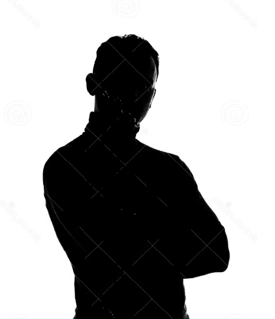
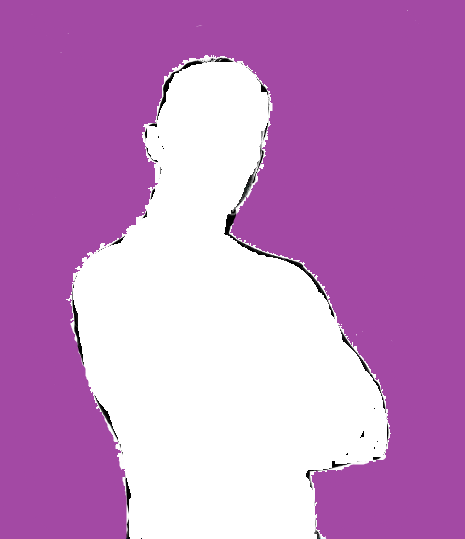

Cambio de Modo
Presiona el botón para cambiar entre modo claro y oscuro
imagen que cambia abajo


Segunda imagen con efecto


Presiona el botón para cambiar entre modo claro y oscuro
imagen que cambia abajo
Segunda imagen con efecto